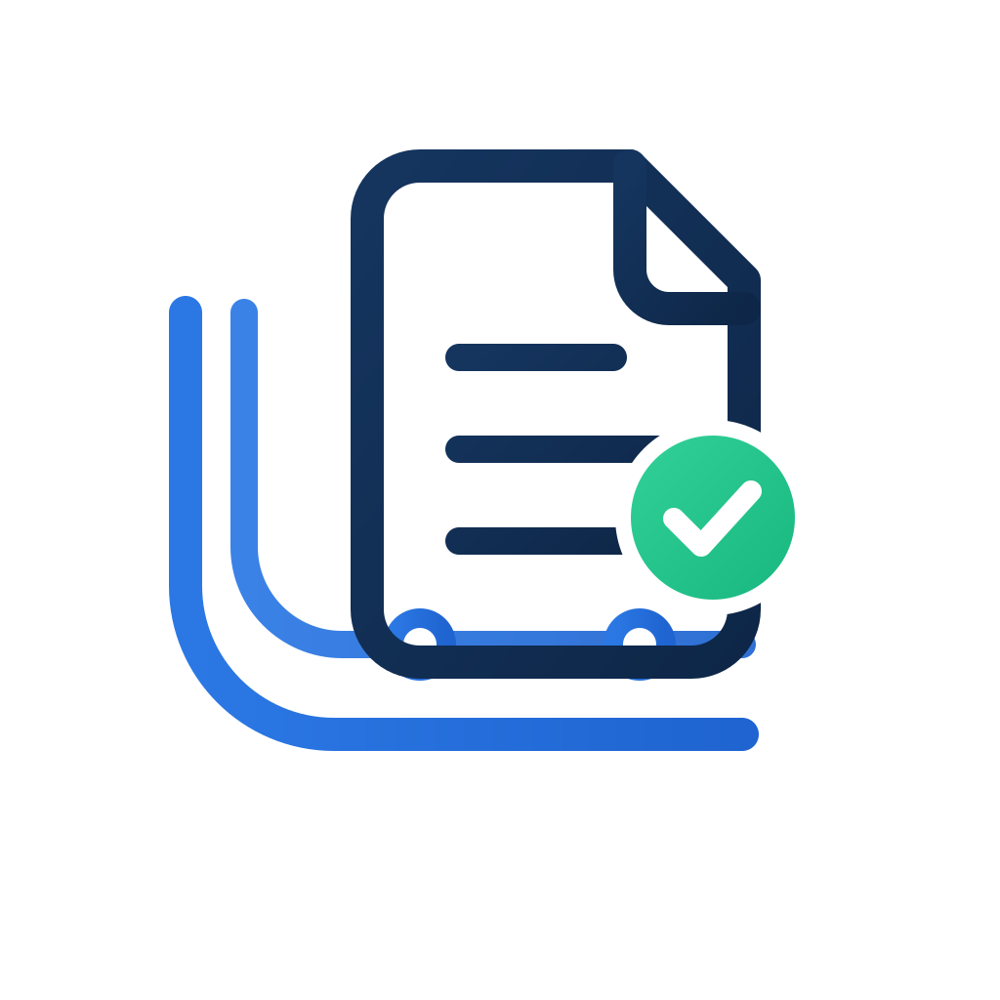
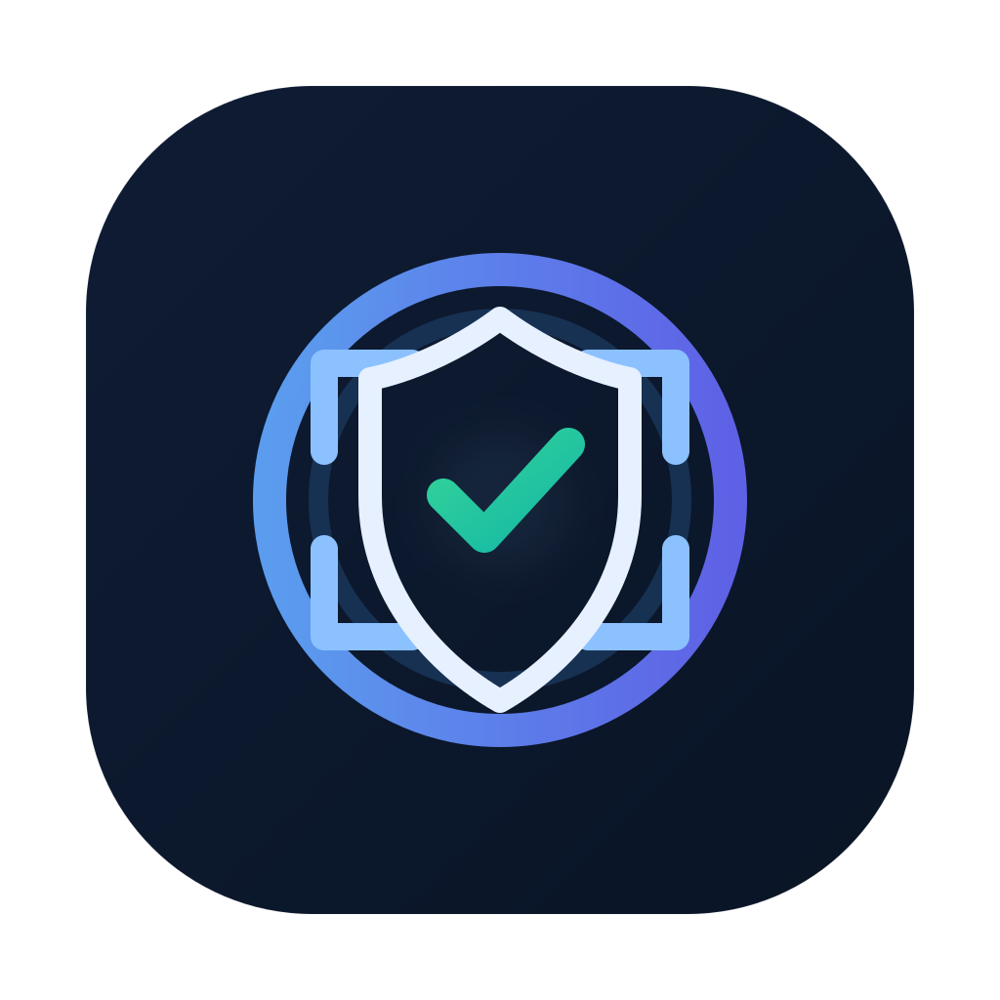
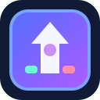

Years of software engineering growth
Frontend precision. Full-stack delivery. Product-focused execution.
Let's turn ideas into Reality
I am Nymwhel Bernardo, a Philippines-based Software Engineer II with experience across Angular, React, Java, Python, and Node.js projects. I focus on building better user interfaces, improving workflows, writing cleaner implementations, and delivering client-ready solutions.
Throughout my projects, I worked on UI/UX improvements, API integration, CRUD operations, data processing, file uploads, report generation, and system enhancements. This experience helped me become adaptable, detail-oriented, and capable of working across both frontend and backend tasks.
Live product builds and deployments
Core tools across frontend and backend
Current focus
Building clean interfaces, reliable workflows, and deploy-ready systems.
UI polish
Full-stack delivery
Cloud-ready apps
Featured projects
Live products and systems I have built
These projects reflect how I approach product direction, frontend structure, dashboard design, business workflow logic, deployment, and overall polish.
SaaS
Finance workflow

Ledgerail
Operator-style finance workspace for document verification, ledgers, reminders, and reporting with a polished dashboard-first experience.
- Structured admin and workspace flows
- Clean business UI with strong operational clarity
- Designed to feel production-ready and sellable
SaaS
Crypto tracker
CryptoDates
Crypto portfolio and notification platform with account flows, market dashboards, alerts, and environment-driven deployment setup.
- Email digests, alerts, and portfolio tracking
- Host-agnostic backend plus modern dashboard UX
- Built to deploy cleanly with env-based config
SaaS
AI workflow

TrustScope
AI-use disclosure and approval platform for freelancers and agencies, centered on project trust, approvals, follow-ups, and receipts.
- Approval links, operator flows, and reports
- Project-based trust and AI activity logging
- Modern UI system across admin and workspace views
Game
Arcade release

Space Defenders Impact
Arcade-style shooter project showing gameplay implementation, balancing, debugging, packaging, and release-focused iteration.
- Gameplay systems and release packaging
- Desktop and mobile delivery mindset
- Hands-on solo build execution
Professional summary
What I bring to a team
I am the type of developer who focuses on making things work properly, look cleaner, and feel easier to use. I pay attention to details in the interface, the flow of a feature, and the small issues that can affect the user experience.
I also enjoy collaborating with the team, sharing ideas, and creating an environment where people can connect, communicate, and work better together. I believe good teamwork helps make the final output stronger.
I may not claim to know everything, but I am willing to learn, adjust, test my work, fix issues, document changes, and finish tasks properly.
Experience
Professional timeline
Software Engineer II
Develop and maintain client-facing system features across Angular, React, Java, and Python-based projects while improving UI/UX and application flow.
- Improve frontend behavior based on client requirements and feedback
- Handle testing, debugging, issue tracking, and validation work
- Present delivered features and enhancements during client meetings
Software Engineer
Built frontend and backend functionality for internal and client project systems using Angular, React, Java, and Python.
- Implemented requested features and resolved production issues
- Supported database tasks, testing, and system reliability improvements
- Collaborated on planning, documentation, and delivery progress
Trainee Software Engineer
Learned SDLC workflows, frontend development support, debugging, testing, quality assurance, and project documentation.
Skills
Stack and strengths
Frontend
Angular, React, TypeScript, JavaScript, HTML, XML
Backend and scripting
Node.js, Java, Python, PHP
Databases
MySQL, PostgreSQL, NeonDB, PgAdmin
Cloud and platforms
AWS CloudWatch, Amazon Cognito, Amazon RDS, Render deployment
Tools and collaboration
Git, GitHub, GitLab, Jira, Mattermost, Microsoft Teams, TortoiseSVN
Delivery practices
SDLC, software testing, test case creation, debugging, documentation, client presentations, AI productivity tools
Education
Bulacan State University
BS in Information Technology Jan 2019 - Jan 2023Earlier foundation
Next Generation Technological College
AutoCAD and Animation Jan 2017 - Jan 2019Let us connect